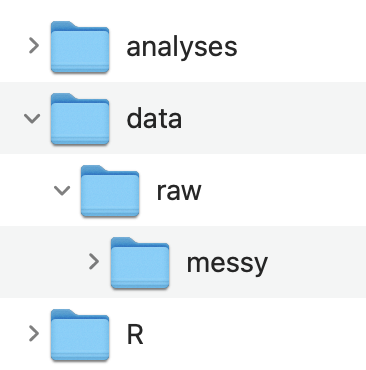

# ---- Setup -------------------------------------------------------------------
# packages
library(here)
library(readr)
library(dplyr)
library(tidyr)
# directories
import_dir <- "data/raw/messy"
output_dir <- "data/raw"
# file names
import_file <- ""
output_file <- ""
# ------------------------------------------------------------------------------
# ---- Import Data -------------------------------------------------------------
# use read_csv() for a .csv file
data_import <- read_delim(here(import_dir, import_file), delim = "\t",
escape_double = FALSE, trim_ws = TRUE)
# ------------------------------------------------------------------------------
# ---- Tidy Data ---------------------------------------------------------------
data_raw <- data_import |>
rename() |>
filter() |>
mutate() |>
select()
# ------------------------------------------------------------------------------
# ---- Save Data ---------------------------------------------------------------
write_csv(data_raw, here(output_dir, output_file))
# ------------------------------------------------------------------------------
rm(list = ls())Class 5: Data Preparation
In Class 4, we saw that the first stage in the data processing workflow is data preparation. This is a critical, though often overlooked stepped. This class will focus on some general principals and common data preparation steps.
Note
If you expect to be working with Survey data from Qualtrics, then you should take a look at the Data Preparation - Qualtrics in Supplemental Materials instead.
This guide is meant to help you figure out the steps you need to take in order to prepare your data for scoring and analysis. The end product of this data preparation stage is one or more tidy raw data files.
This guide assumes you have completed Classes 1 - 4. You should reference materials in those classes to help you at this stage.
GitHub Copilot in RStudio
Not required, but you might find it useful to setup GitHub Copilot in RStudio to have an AI assistant help you write code. I find it useful for writing tedious repetitive code that is often required during this data preparation stage.
Setup Project
Your project should be stored on a shared drive (e.g., Dropbox, OneDrive, Google Drive) so that all your team members can access it.
- Create a folder for your project that contains the three following folders (you can use whatever folder naming scheme you like)
📁 analyses
📁 data
📁 R
- Inside of the data folder create a raw folder
📁 data
📁 raw
If you have multiple raw data files you may consider creating an organization like this

- Create an RStudio Project:
File -> New Project… -> Existing Directory
Data
Get access to the original raw data files
Move the data files to your data/raw or data/raw/messy folder
(Optional) Rename the data file to something shorter (e.g., rawdata_messy.csv)
- If you have multiple raw data files you should name the data files that correspond to what measure it came from
Template R Script
The main goal at this stage is to complete an R script to create tidy raw data files from messy raw data files. A tidy raw data file is just a cleaned up version of the original raw data file that is easier to understand and is formatted in a way that makes it easy to use.
- Create a new R script file named: 1_tidyraw.R
- If you have multiple messy raw data files, you should create separate tidy scripts for each one and name the script file with the measure that it comes from (you can keep the 1_ prefix for all of them).
- Save it in the R folder
- Copy and paste this template into your script: (use the copy icon button on the top-right)
- Use the 1_tidyraw.R script template to get started. It is just a template, you will need to modify it for your data specifically. The template contains 4 main sections:
- Setup
- Import Data
- Tidy Data
- Save Data
Important
If you have multiple messy raw data files then you should create a separate tidyraw script for each one.
However, if you only have one raw data file because your data was all collected in a single task/measure then you can just create one tidyraw script
Setup
The Setup section is to:
Load any packages used in the script
Set the directories of where to import and output data files to
Set the file names of the data files to be imported and outputted
I like to include the directory and file names at the top of the script that way it is easy to see what is being imported/outputted and from where right at the top of the script rather than having to search through the script for this information.
We can then use the import_dir , output_dir, import_file, and output_file variables in the script when we import and output a data file.
Import Data
The Import Data section is simply to import the data.
I suggest using the here() package to specify the file path. This was covered in Class 4.
Tidy Data
The Tidy Data section is where most of the work needs to be done. You should be using dplyr and tidyr to do most of the work here, though you may need other packages and functions. You can delete whatever is in there now, that is just a placeholder as an example of the type of functions you might use. See the following class materials to help you in this section:
Understanding the Messy Raw Data File
You should take some time to better understand your messy raw data file:
Use functions, such as colnames() and unique(), that we learned in Class 1: An Introduction to Working with Data in R to explore your imported data file.
- Identify the essential columns you want to keep. Some examples:
- Unique IDs for each participant
- If there are multiple trials or items adminstered, what column identifies the trial or item number?
- Same thing if there were multiple blocks or sessions adminstered
- Different experimental conditions or counterbalancing condition
- Stimulus information (e.g., red square) for individual trials / items
- Response information
- Response made
- Correct response (if there is one)
- Accuracy (if there is one)
- Response time
- Adminstration date and time?
- And more…
- What kind of values do each of those columns contain?
- Numeric? Character strings?
The amount of time it took for you to do those steps is the reason we are doing this data preparation step. The end product will hopefully be a tidy raw data file that is way easier to understand and work with, even for someone that was not involved in the project.
For example you might have a data frame that is structured like this
Are you able to understand what this data frame contains?
There is a bit of structure in the column names but that is about it. By the end of this guide we will create a tidy version of this messy data file.
Tidying Up
How you need to tidy up your data file will depend on the nature of your program used to generate your data. However, there are some common messy problems we can address.
Column names that are not clear:
rename()Rows that are not needed:
filter()Add or modify values in columns:
mutate()andcase_when()Columns that are not needed:
select()
Notice in the script template I laid out the general format for this.
data_raw <- data_import |>
rename() |>
filter() |>
mutate() |>
select()Rename Columns
This step can actually be completed in the rest of the steps below but occasionally can be useful to do upfront.
One thing you might want to do at this point though is consider a standard naming scheme for your columns. Do you want to use capital letters? All lower case? Snake_case? CamelCase? etc.
Let’s go ahead and rename some columns so they are more clear what information they contain:
data_raw <- data_import |>
rename(Trial = trial, Procedure = List,
Condition = COND, Correct_Response = Ans)
Important
- You need to use the special type of quotation marks
` `if your column names contain special charaters like: a space,$,%,-, and more…
View the Data Frame tab to see the resulting data frames
Use the small arrow ▸ at the end of the column names to see more columns
Filter Rows
Occasionally there might be additional rows that are not needed. In this example the first row for each participant is not needed and corresponds to an “Instructions” screen. Let’s remove this
data_raw <- data_import |>
rename(Trial = trial, Procedure = List,
Condition = COND, Correct_Response = Ans) |>
filter(Procedure != "inst")View the Data Frame tab to see the resulting data frames
Use the small arrow ▸ at the end of the column names to see more columns
Add and Modify Columns
This is where most of the work will be done for data preparation. Some common problems with messy raw data files:
Values in columns don’t make sense and/or require understanding how the program was setup
The same information is contained across different columns BUT in different rows
Missing columns that should be there
Values in columns don’t make sense
In this sample data:
The
Trialnumber continues across practicepracand realtasktrialsConditionhas values of 0 and 1. What do 0 and 1 mean???Procedurehas values that can be more clear (don’t abbreviate!)Columns with
.respandCorrect Responsecontain values that do not make sense (we will deal with this later though). What do 5 and 6 mean???
For the Trial number we will use a combination of mutate(.by = ) and dplyr::row_number()
data_raw <- data_import |>
rename(Trial = trial, Procedure = List,
Condition = COND, Correct_Response = Ans) |>
filter(Procedure != "inst") |>
mutate(.by = c(ID, Procedure),
Trial = row_number())View the Data Frame tab to see the resulting data frames
Use the small arrow ▸ at the end of the column names to see more columns
For the other ones we can use a combination of mutate() and case_when():
data_raw <- data_import |>
rename(Trial = trial, Procedure = List,
Condition = COND, Correct_Response = Ans) |>
filter(Procedure != "inst") |>
mutate(.by = c(ID, Procedure),
Trial = row_number()) |>
mutate(Condition = case_when(Condition == 0 ~ "word_match",
Condition == 1 ~ "word_mismatch"),
Procedure = case_when(Procedure == "prac" ~ "practice",
Procedure == "task" ~ "real"),
Correct_Response = case_when(Correct_Response == 5 ~ "yes",
Correct_Response == 6 ~ "no"))View the Data Frame tab to see the resulting data frames
Use the small arrow ▸ at the end of the column names to see more columns
I haven’t even told you anything about the task that generated this data (I am making this up as I go so I don’t know either), yet it is already easier to understand what kind of data it contains.
Combine information across columns
You can probably guess that the data contained in slide1.resp and slide2.resp contains the same information about what response was made. But one is for practice trials and the other for real trials. This should just be combined in one column. Same thing with slide1.rt and slide2.rt.
There is a convenient function to do this, dplyr::coalesce()
data_raw <- data_import |>
rename(Trial = trial, Procedure = List,
Condition = COND, Correct_Response = Ans) |>
filter(Procedure != "inst") |>
mutate(.by = c(ID, Procedure),
Trial = row_number()) |>
mutate(Condition = case_when(Condition == 0 ~ "word_match",
Condition == 1 ~ "word_mismatch"),
Procedure = case_when(Procedure == "prac" ~ "practice",
Procedure == "task" ~ "real"),
Correct_Response = case_when(Correct_Response == 5 ~ "yes",
Correct_Response == 6 ~ "no"),
Response = coalesce(slide1.resp, slide2.resp),
Response = case_when(Response == 5 ~ "yes",
Response == 6 ~ "no"),
RT = coalesce(slide1.rt, slide2.rt))View the Data Frames tab to see the resulting data frames
Use the small arrow ▸ at the end of the column names to see more columns
Add additional columns
You may have noticed that there is no column corresponding to accuracy. We have Response and Correct_Response information so we can create a new column for Accuracy
data_raw <- data_import |>
rename(Trial = trial, Procedure = List,
Condition = COND, Correct_Response = Ans) |>
filter(Procedure != "inst") |>
mutate(.by = c(ID, Procedure),
Trial = row_number()) |>
mutate(Condition = case_when(Condition == 0 ~ "word_match",
Condition == 1 ~ "word_mismatch"),
Procedure = case_when(Procedure == "prac" ~ "practice",
Procedure == "task" ~ "real"),
Correct_Response = case_when(Correct_Response == 5 ~ "yes",
Correct_Response == 6 ~ "no"),
Response = coalesce(slide1.resp, slide2.resp),
Response = case_when(Response == 5 ~ "yes",
Response == 6 ~ "no"),
RT = coalesce(slide1.rt, slide2.rt),
Accuracy = case_when(Response == Correct_Response ~ 1,
Response != Correct_Response ~ 0))View the Data Frame tab to see the resulting data frames
Use the small arrow ▸ at the end of the column names to see more columns
Remove Columns
Finally, we can remove and reorder columns using select():
data_raw <- data_import |>
rename(Trial = trial, Procedure = List,
Condition = COND, Correct_Response = Ans) |>
filter(Procedure != "inst") |>
mutate(.by = c(ID, Procedure),
Trial = row_number()) |>
mutate(Condition = case_when(Condition == 0 ~ "word_match",
Condition == 1 ~ "word_mismatch"),
Procedure = case_when(Procedure == "prac" ~ "practice",
Procedure == "task" ~ "real"),
Correct_Response = case_when(Correct_Response == 5 ~ "yes",
Correct_Response == 6 ~ "no"),
Response = coalesce(slide1.resp, slide2.resp),
Response = case_when(Response == 5 ~ "yes",
Response == 6 ~ "no"),
RT = coalesce(slide1.rt, slide2.rt),
Accuracy = case_when(Response == Correct_Response ~ 1,
Response != Correct_Response ~ 0)) |>
select(ID, Procedure, Trial, Condition, Response,
Correct_Response, Accuracy, RT)We now end up with a tidy raw data frame!
You can see that this data frame is much easier to understand and to work with. Someone outside of your project would have a decent understanding of what information is contained and what is being measured.
You need to have your data in this type of format as it will be easier for you to start thinking about scoring and analyzing your data
Save Data
Finally, you just need to save this tidy data frame to a .csv file in your data or data/raw folder and use the name of the task/measure that it came from.
We have not talked about the write_csv() function but it is pretty simple to use as you can see:
write_csv(data_raw, here(output_dir, output_file))